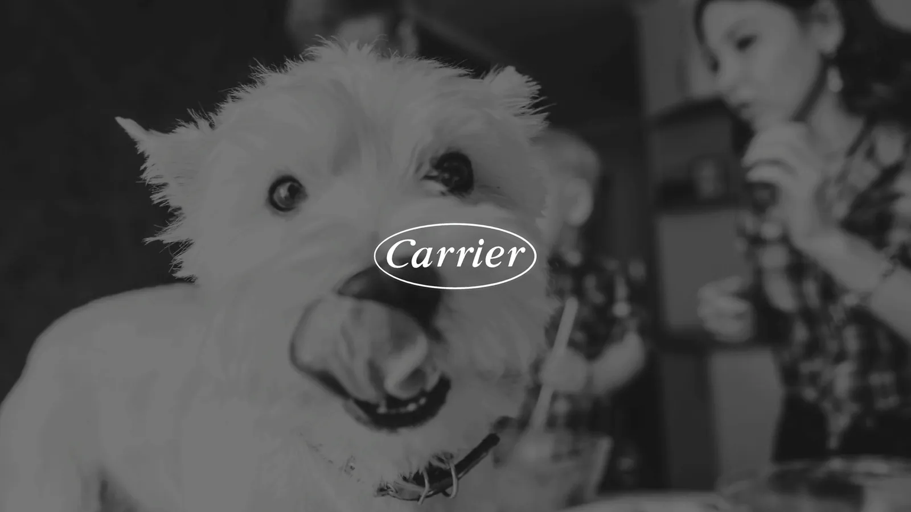
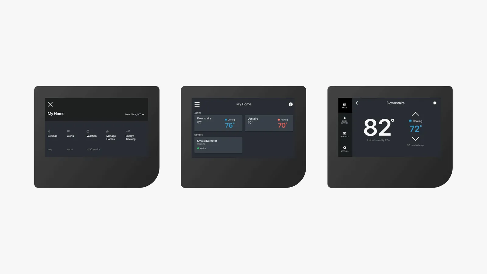
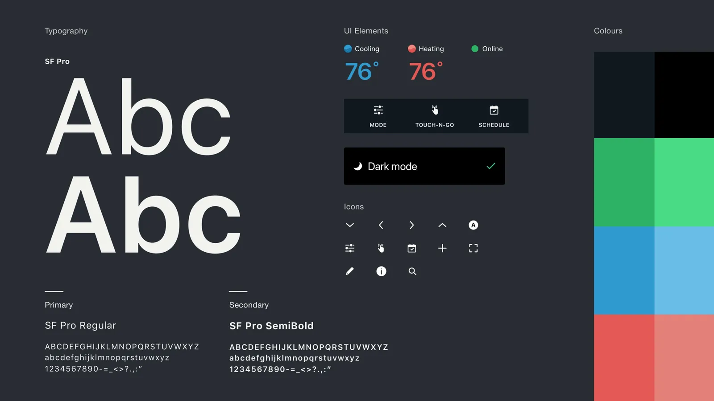
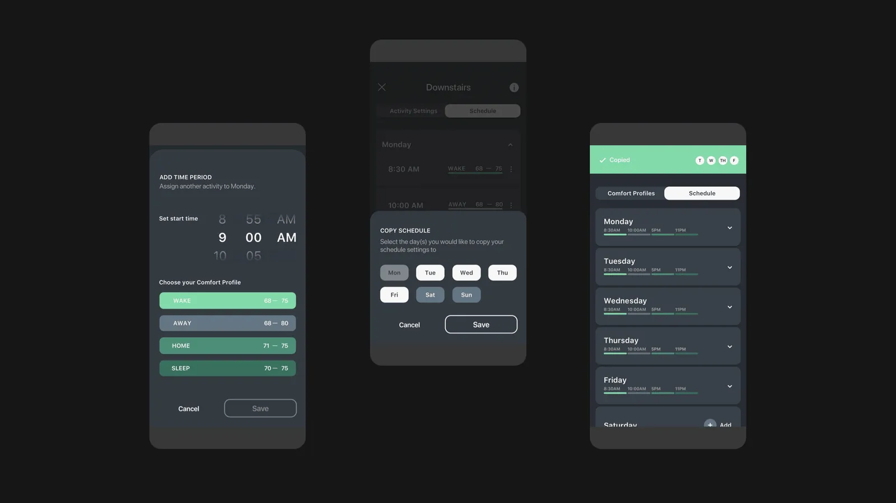
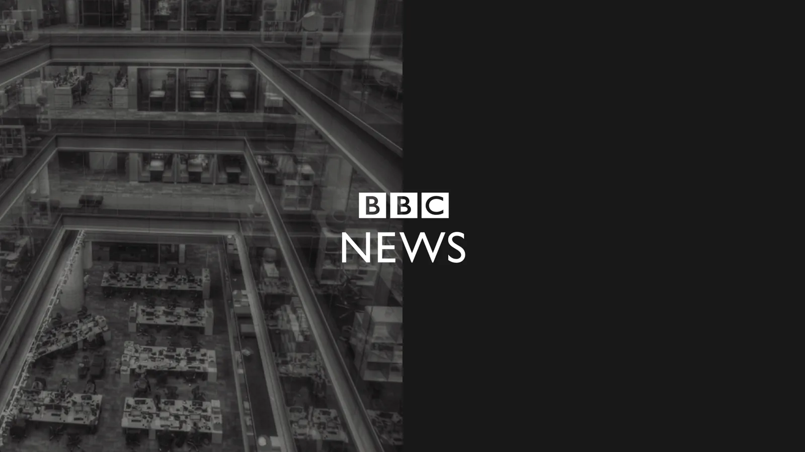
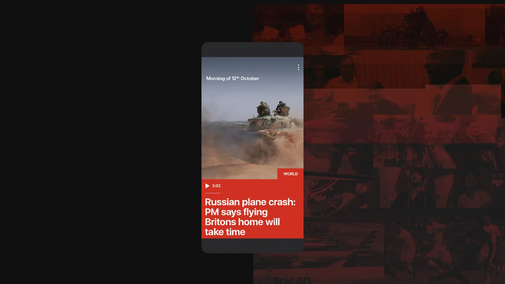
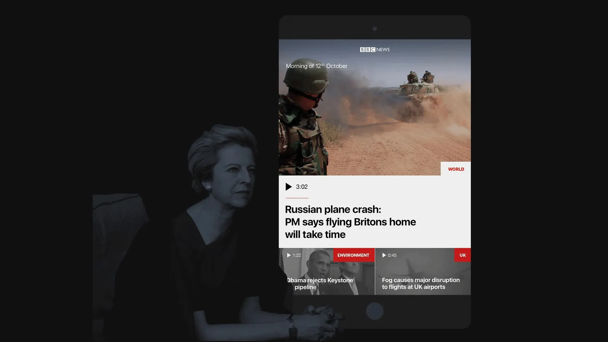
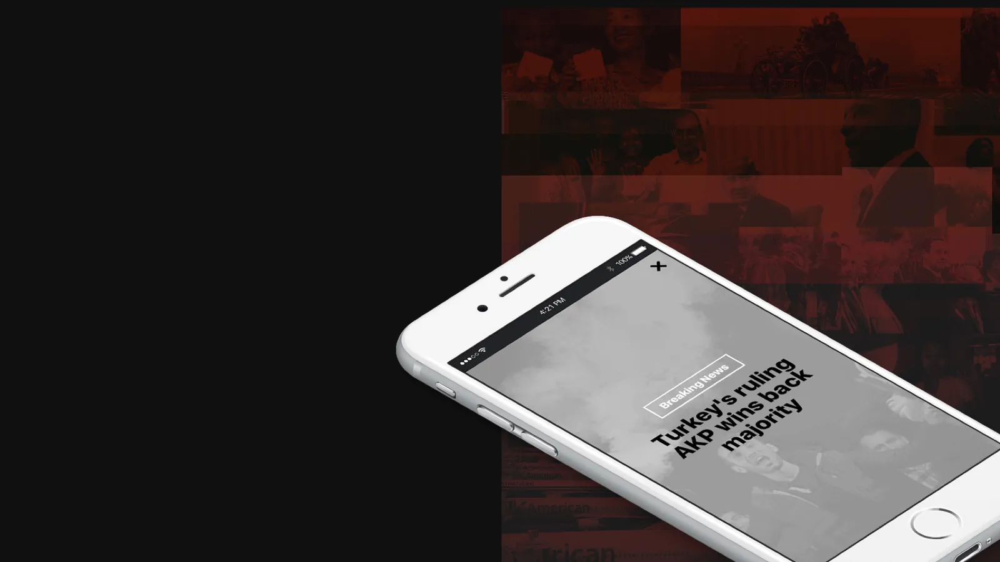
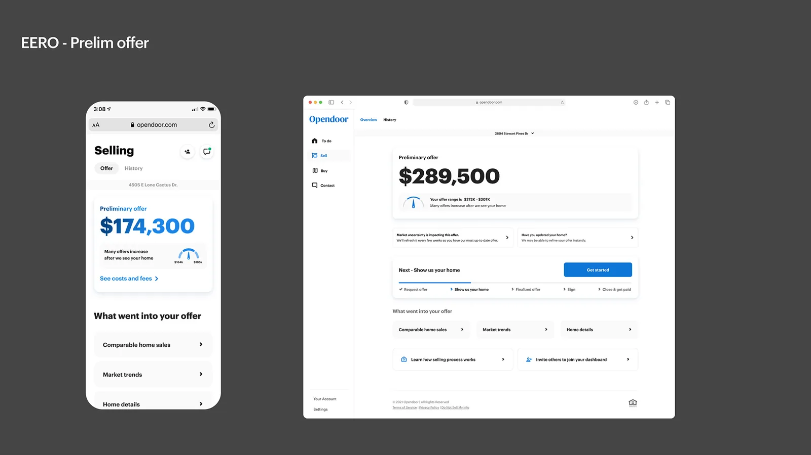
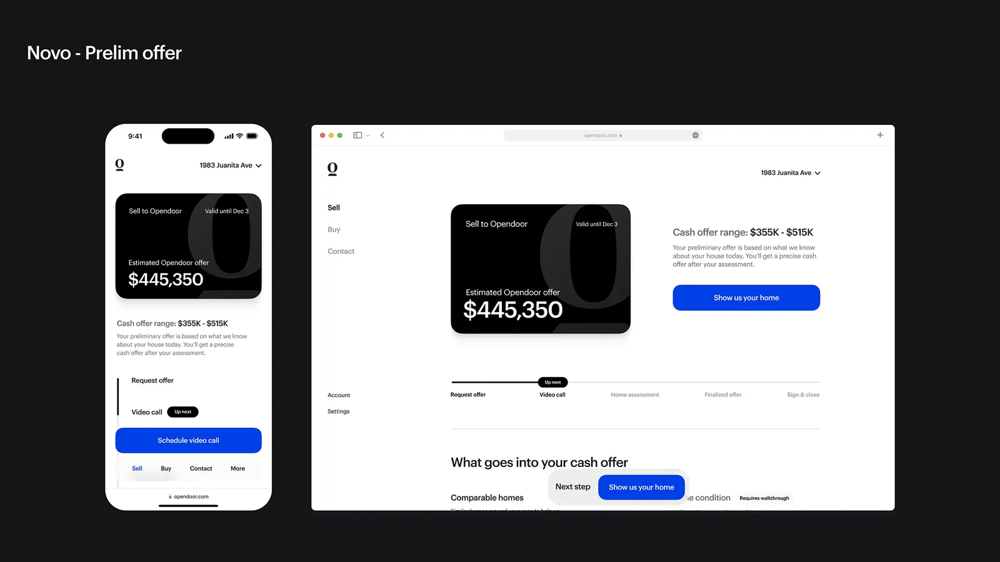

Portfolio deck
A short introduction to selected work. Each project pairs a brief explanation with a few key screens.
- Type
- Proxima Nova, Inter
- Live
- 2026folio.micahburger.com
A reference for building my portfolio, case studies, and prototypes.
Principles
These principles guide my portfolio, case studies, and prototypes. The format changes with the project.
Use real screens and enough context to explain the problem, my role, and what changed. Give the work room. Let the copy explain what the visuals can’t.
Use type, spacing, and contrast to make the important parts easy to find. Give each section a clear point and keep the supporting copy readable.
Show the range of work before asking someone to open a case study. The overview should explain what each project involved. The detail is there when they want it.
Use motion to connect views, show a response, and keep people oriented. Keep transitions quick and provide a reduced-motion version. Leave room for play where it fits.
Formats
Use the deck for a quick view of several projects. Use a case study when the decisions need more explanation. Both should make the work easy to understand.
A short introduction to selected work. Each project pairs a brief explanation with a few key screens.
A closer look at one project: the problem, my role, the decisions, and what I learned. Keep the screens close to the explanation.
Implementation notes
.product wrapper.Color
Use warm neutrals for the page, text, and navigation. Project sections can use a palette that suits the work. Check text and controls against each background.
The base palette for this page. Muted is for labels, soft is for body copy, foreground is for titles. The accent marks the things that should stand out: numbers, the current chapter, pull lines. It passes contrast on the page (5.5:1), but it is kept to those few marks so it reads as emphasis rather than a second text color. Select a swatch to copy its value.
Typography
Large titles set the pace. Supporting text explains the work. Use the scale for the chosen format and adjust line breaks to suit the content.
Specs read as font size / line height / letter spacing.
Applying for a rental is long, sensitive, mostly completed on a phone, and ends with a payment.
Orpheus Pro for titles, Poppins for text, as on the micahburger.com case studies. A size scale has not been standardized yet; take sizes from the live Opendoor case study until it is.
Space and surface
Use spacing to show what belongs together. Add a surface, border, or shadow when it helps separate content or explain an interaction.
--space-sectionclamp(64px, 10vw, 120px)--gutterclamp(20px, 6vw, 48px)--content-max1080px text widthmedia width1300 to 1407px--page-margin-left140px left--page-margin-top130px top--page-margin64px right and bottom--page-margin-mobile28px sides under 900px, 96px top--radius-sm8px--shadow-sm0 8px 30px / .28--radius-md14px--shadow-md0 20px 60px / .32--radius-lg20px--shadow-lg0 30px 80px / .4pill999pxSurfaces use these radii. Device and media frames have their own geometry (36px phones, 18px cards, 14px desktops), listed under Components.
Motion
Use motion to connect states and show what changed. Keep distances short. Choose a curve for the interaction and provide a reduced-motion version.
Five shared curves. Distances: 12px for lists, 16px for copy, 24px for reveals, 40px for a change of direction. Transitions move transform and opacity by default; the deck’s page color wash, the chapter menu’s size morph and the hero scramble are the exceptions. The scramble is an expressive effect, not a transition.
Reduced motion is on for this device, so the demos below play instantly.
The current project leaves before the next one arrives. Media leads; copy follows. The background changes with the project.
Timed from the moment the project changes. 0ms: media starts leaving, 320ms, move curve. 120ms: copy starts leaving, 320ms. 160ms: new media arrives, 380ms, arrive curve. 320ms: new copy arrives, 380ms. Page color crossfades over 560ms, move curve.
Browse with the dots, arrow keys, or drag. Automatic playback pauses while you drag and when the carousel is out of view.
Auto every 4.2s, 700ms move curve. Manual: 400ms settle curve. Drag past 20% of the width, or flick, to change slide.
Open a project from the overview. Select it again or press Escape to return.
FLIP with the Web Animations API, 650ms move curve. The other cards dim to 15% in 200ms.
Sections rise and fade into view once.
24px, 400ms enter curve.
Buttons and cards grow slightly on hover. Only on devices with a precise pointer.
Buttons 1.12, cards 1.05, 320ms enter curve.
Open a panel without losing the current page.
In: 36px and fade, 240ms enter curve. Out: 180ms exit curve.
Design controls
The cursor changes over links and draggable content. Move into the box to try it.
16px white dot, difference blending. #FF5A36 over anything clickable, #DB4D2E while grabbing.
An expressive hover effect for the page title.
GSAP SplitText. Each character flashes a spark color for 300ms, rippling out from the center; half swap to a random glyph, a third show their width. After 6s without pointer movement, one line plays every 4s. Reduced motion: the title never splits or moves.
The live version is the title at the top of this page.
Connect related pages with a short transition. Navigation should still work when transitions are unavailable. This uses native View Transitions with the same curves; browsers without support navigate normally.
@view-transition { navigation: auto; }
::view-transition-old(root) { animation: .32s cubic-bezier(.65,0,.35,1) both vt-out; }
::view-transition-new(root) { animation: .38s cubic-bezier(.23,1,.32,1) .16s both vt-in; }
@keyframes vt-out { to { opacity: 0; transform: translateY(-16px); } }
@keyframes vt-in { from { opacity: 0; transform: translateY(16px); } }
.case-hero-media { view-transition-name: hero-media; }Respect reduced-motion preferences across the site. Remove decorative animation, stop automatic slides, and keep view changes simple. Content and controls should remain usable without animation.
Components
Use these for navigation, media, and supporting detail. Each example includes where it belongs and how it behaves. The deck header, media frames and progress dots come from the portfolio deck; the chapter bar, chapter menu and text control are from this page.
Use across deck pages for identity and navigation. Keep the menu button readable on each project background.
Centered, Inter 500 14px. The pill fills with the header text color and uses the page color for its label.
Use frames when a device or viewport helps explain the screen. Let exported product visuals stand alone when they already include that context.
Inside a 786 × 762 media box. Phone 260px wide, 9:19, radius 36. Card 340px, 4:3, radius 18. Desktop 440px, 16:10, radius 14.
Show the active item in a small gallery. Keep the indicators visually small and give each control enough space to select.
8px dot, 12px apart. Each dot’s clickable area extends 12px past it on every side, a 32px square. Active dot: text color at 90%.
Help people navigate a long page. Show the current section and a Menu button that opens the chapter list.
Fixed bottom right, hidden while the hero is in view. Count, chapter name and a ring that fills with scroll position. The button’s accessible name is “Chapter menu”.
The flow never said how much was left.
Typos surfaced after reports were pulled.
Use for a short sequence or a small set of related findings. Give each item a clear title and one useful explanation.
Mono number in accent, Instrument Sans title, short body, hairline rule between items.
Payment step
Explain a specific behavior beside the relevant screen. On wide layouts, notes can stay in view with the media.
Mono numbers, 13px body. Sticky on wide screens.
Use for supporting actions such as replaying a demo. Keep the label clear, with visible hover and keyboard-focus states.
Mono 11px, uppercase, muted. Underline on hover. Kept out of the accent so it reads as secondary to the content.
Open the section list from the chapter bar. Mark the current chapter and make each destination easy to identify.
The bar grows into the menu from its bottom-right corner, 420ms enter curve; chapters rise 22ms apart. Closing fades the content, then shrinks in 320ms. Arrow keys move between chapters.
Layouts
The deck gives each project a focused introduction. Case studies use a longer sequence of text and screens. Start with these layouts and adjust for the work.
Text 600px, media 786 × 762, both centered vertically. Padding: 130px top, 64px right and bottom, 140px left. One variant fills the whole page with the project’s color.
Black page, two columns, 56px gap. Padding: 140px top, 64px sides, 96px bottom. Each card is the real page, scaled down. One column under 900px.
Label column 240 to 380px, content fills the rest, 64px apart. 72px logos, 56px between entries.
Serif title and overview at the top, full-width UI under them, then sections that alternate text and screens.
These are the portfolio deck’s breakpoints.
Portfolio patterns
Use an overview to show range, a gallery to show a sequence, and a comparison when the change is easier to see side by side.
A project summary beside a rotating preview. Use it on the homepage so people understand each project before opening it.
From the micahburger.com homepage. The card rotates four frames, 2s each: the brand logo over a photo, then three UI highlights. It runs only while in view. The row opens the case study in a new tab.
Featured Projects
Infinity Thermostat I led a creative team redesigning Carrier’s Infinity thermostat and app. We updated the wall controller and mobile experience to make everyday controls easier to use.




BBC News Stream I worked with the BBC News digital team on a video-led news experience, designing how people discover stories and move between videos.




A compact list for a larger body of work, with a quick preview on hover.
Rows on hairline rules. Hover fills the row from the bottom with a color sampled from the project’s thumbnail, 250ms enter curve, and the thumbnail follows the pointer. Projects from micahburger.com. Adapted from Semplice’s portfolio grids.
Big titles for three to six projects, with the screen rising behind on hover.
Large centered titles. Hover dims the others to 20% and brings that project’s screen up behind, 400ms enter curve.
Related screens in sequence, one big frame at a time, each with a caption.
Auto advances every 4.2s on the 700ms move curve while in view, and pauses on hover. Arrows, keys, drag and a flick use the 400ms settle curve. Example: Lincoln, Build and Price.
The same screen in two versions, when the change is easier to see side by side. Drag the divider.
Arrow keys move the divider when it has focus. A click settles on the 400ms settle curve. Adapted from Semplice’s portfolio grids.


Opendoor, preliminary offer. V1 is Eero, the previous design system. V2 is Novo, which leads with one offer card, the cash range and a single next step.
One sentence that explains a decision, lit as you scroll. It must read fine without the animation.
Words go from rule gray to foreground as the line crosses the middle of the screen. Plain scroll position, no library. Reduced motion shows it fully lit.
The test shifted my focus from payment placement to whether applicants understood what they were paying for.
A short hint on the cursor, like View or Drag. Hover the rows or the slider above to see it.
The dot grows into a pill: View on links, Drag on the slider. Precise pointers only; touch never sees it.
data-cursor="View" on any element. The nearest one wins.Case studies
Give readers enough context to understand the problem, my contribution, and the result. Use the format that fits the project.
Portfolio deck
Applicant experience
Context Applying for a rental is long, sensitive, mostly completed on a phone, and ends with a payment.
My contribution I restructured the application into clear chapters that follow the applicant's mental model.
Screens Three screens, each with a plain label.
Case study
On micahburger.com the title is usually two lines of Orpheus Pro, with Objective and Role as bold labels under the overview. Those are layout defaults, not rules for every project.
Use evidence that fits the claim.
Include a metric when it helps explain the result. For work without outcome data, describe what changed, what testing showed, or what remains unmeasured. Keep a measured result separate from a hypothesis, a design intention, or an early signal. Never invent a number, and keep internal placeholders out of published case studies.
Voice
Write the way I explain the work to another designer: what was happening, what I changed, and why. Keep the useful detail and remove the rest.
Name the problem.
Applicants couldn’t tell how much was left.
Explain the decision.
I grouped the application into sections so applicants could see their progress.
Be clear about ownership.
I led the interaction design and worked with engineering on the responsive behavior.
Match the claim to the evidence.
The next test will show whether the new explanation helps.
Give each sentence a job.
Use the caption to explain what changed. Let the screen show the layout.